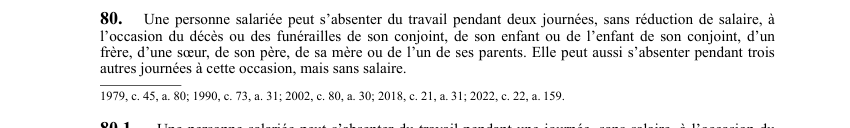

art-80-LNT : congés familiaux
Un article du wiki ⚖️ Recueil législatif
En bref
Article qui établit le droit à 10 journées d'absence par année pour obligations familiales ou parentales.
- 10 journées d'absence par année civile (du 1er janvier au 31 décembre).
- Les 2 premières journées rémunérées si 3 mois de service continu (depuis 2019).
- Les jours peuvent être pris en demi-journées si l'employeur le permet.
- Motifs reconnus : garde.
- Le salarié doit aviser l'employeur le plus tôt possible.
🌐 LegisQuébec · 📄 PDF officiel (page 31)
Texte officiel : capture du PDF
{kind=link}

Toucher l'image pour l'agrandir🔗 Ouvrir a cette page : LNT.pdf : page 31 · texte a jour au 26 mars 2024
Voir aussi
- art-62-LNT : repos hebdomadaire · article qui établit le droit à une journée d'absence rémunérée pour le mariage ou l'union civile du salarié.
- art-79.1-LNT : absence pour maladie, accident ou violence · faculté : une personne salariée peut s'absenter du travail jusqu'à 26 semaines sur une période de 12 mois pour cause de maladie, de don d'organes ou de tissus à des fins de greffe, d'accident, ou de violence conjugale ou à caractère sexuel dont elle a été victime.
- art-81-LNT : congé maladie · article qui prévoit des absences rémunérées pour certains événements familiaux : mariage ou union civile d'un proche, funérailles.
- art-81.18-LNT : définition du harcèlement psychologique · faculté : définit le harcèlement psychologique : une conduite vexatoire, par des comportements, paroles, actes ou gestes répétés, hostiles ou non désirés, qui porte atteinte à la dignité ou à l'intégrité du salarié et entraîne un milieu de travail néfaste.
- ↑ Loi : LNT
Pages qui pointent ici (5)
- art-62-LNT : repos hebdomadaire Recueil législatif
- art-81-LNT : congé maladie Recueil législatif
- Conciliation travail-famille Droit du travail
- LNT Recueil législatif
- LNT : Chapitre V : Congés familiaux et maladie Recueil législatif